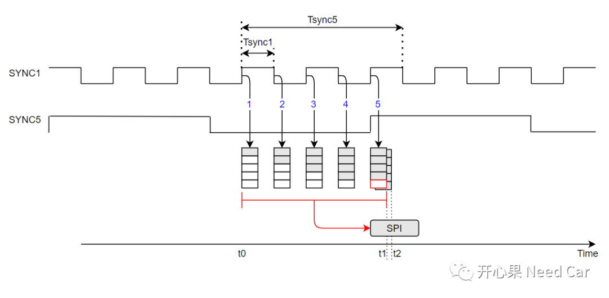
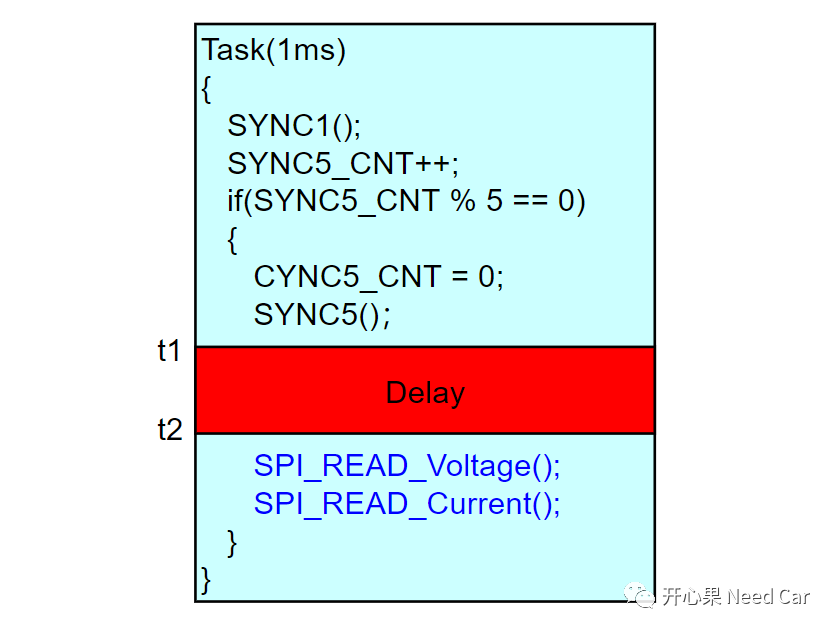
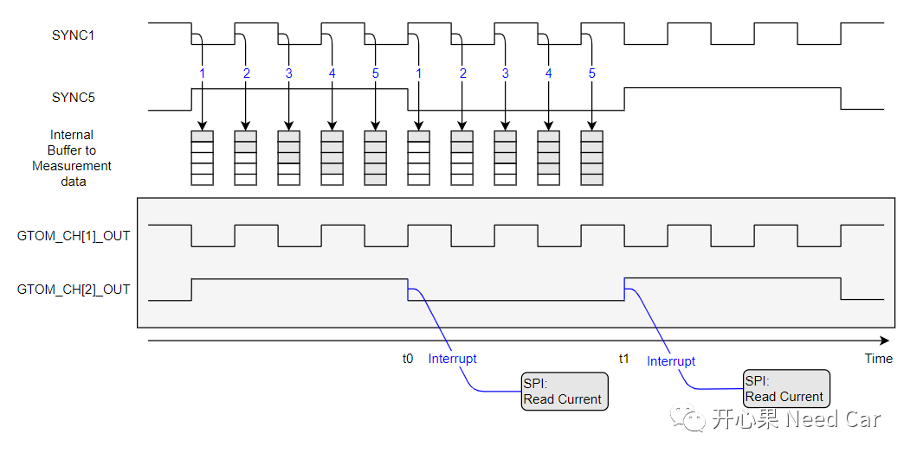
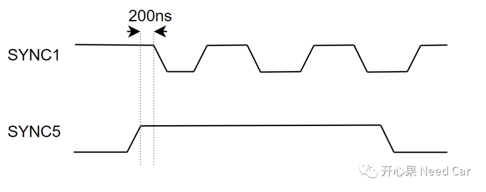
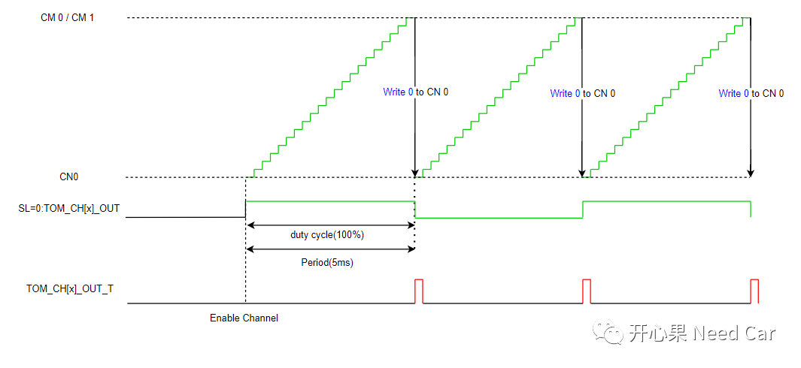
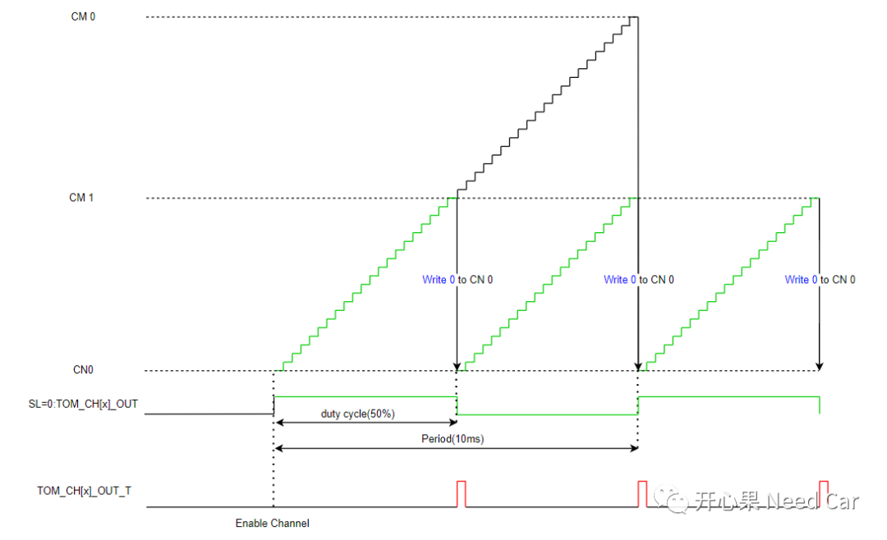
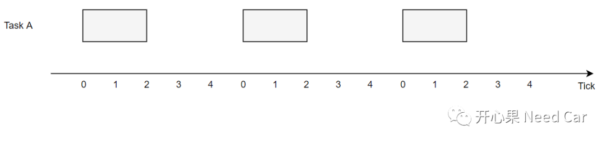
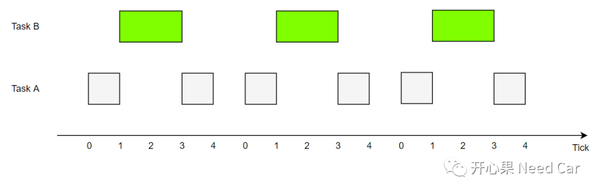

开心果 Need Car · 2022-06-16T16:14:00+08:00 · 微信原文
在工程开发问题（二）：同步(Synchronization)错误带来的问题一文中，提到SYNC1和SYNC5的同步方式：在同一Task中反转SYNC1和SYNC5 Pin脚。但是实际测试发现，电流值的读取依然不准，还会读取到最大电流值的情况。
那么，为什么会这样呢？
电流值读取异常分析
使用同一Task实现SYNC1和SYNC5 Pin的触发，虽然可以保证Tsync5时间内的SYNC1次数不会超限(最大5次)，但是并不能保证SPI读取电流值时机，因为SYNC1执行完以后，如果电流值还没有从Internal Buffer更新到SPI缓存区，SPI就读取电流值，将会导致读取的电流值不准。
如下所示：t1时刻，使用SPI读取电流值，此时，SYNC1刚采样完电流值，还没有将数据从内部缓存区更新到SPI输出缓存区，此时使用SPI读取5个电流值，就会造成最后一个电流值读取的是默认值（最大值）。如果在t2时刻读取电流值，即：确保数据从内部缓存区更新到SPI输出缓存区后再读取，数据将不会异常，但是，通过软件控制t2时机相对复杂（不能确定延时多少时间合适）。


既然使用Task方式无法确保读取电流值的准确性，如何精确控制SYNC1和SYNC5的同步，同时又能精确读取电流值呢？使用GTM的子模块TOM(Generic Timer Output Module)。
通过控制PWM输出实现SYNC1和SYNC5的精确同步，同时在SYNC5 Pin反转的同时触发一个中断，在中断程序中读取的电流值，如下所示：

假设：使用GTOM_CH[1]_OUT模拟SYNC1，实现数值采样，使用GTOM_CH[2]_OUT模拟SYNC5，实现数据Copy(将内部采集的电流值拷贝到SPI输出缓存区)，同时触发中断，在中断程序中使用SPI指令读取电流值。
1、异步读取电流值
在中断例程中读取电流值可以看作一个同步行为，如果读取电流值耗费的时间不长，该方式可行。如果在中断例程中读取电流值耗费的时间相对较长，则不推荐使用该方式，中断例程执行时间过长会影响Task的周期，使得Task周期抖动。那如何操作呢？可以在中断中设置一个电流值读取标志，在一个高优先级的Task（1ms）中读取电流值，这种方式是异步行为。
本问题中，使用SPI读取驱动芯片的数据，耗时较大（接近500us），修复策略中使用异步读取电流值方式，即：中断中设置电流读取标志位，在1ms的Task中周期性判断该标志位，如果置位则通过SPI读取电流值。
提示：
本问题中，1ms Task（优先级最高）所在的Core1任务量低，没有过多的中断和高优先级任务，确保了在1ms内可以有效地将数据读取完毕。
如果SPI读取的数据量大，可以考虑使用DMA的方式，降低CPU的使用率；如果SPI每次读取的数据量小，使用DMA方式，会频繁触发中断，使用DMA方式可能就不是一个最佳方案。
2、SYNC1和SYNC5的同步时机

3、TOM模拟SYNC5原理
本文使用TOM模拟SYNC5同步，设计了两种方案：
方案一：
设置SYNC5的PWM周期为5ms（配置CM 0寄存器），设置占空比100%（配置CM 1寄存器），每次CN 0 ≥ CM 1，可以触发TOM_CH[x]_OUT_T输出一个输出脉冲，如下所示：

方案二：

每个Task会设置一个任务周期，而执行这个Task所花费的时间一般会小于任务周期。比如：Task A的周期为5ms，执行时间2ms，在没有任务抢占和外部中断的情况下，运行情况如下所示：

什么意思呢？就是Task A中的任务执行时间确定，比如：电流值的读取时机会比较固定。
但是，实际的工程项目中，Task会存在抢占行为（高优先级任务抢占低优先级任务），Task也会被中断例程打断。如下：Task A、Task B的周期均为5ms，执行时间均为2ms，Task B的优先级高于Task A，则两个任务可能存在如下行为：每次Tick = 1时，Task A被Task B抢占。

既然Task存在被抢占的可能，意味着Task中某个函数或者代码执行期间，可能被中断，进而使得某个函数执行的时机存在不确定性。
往期精彩回顾